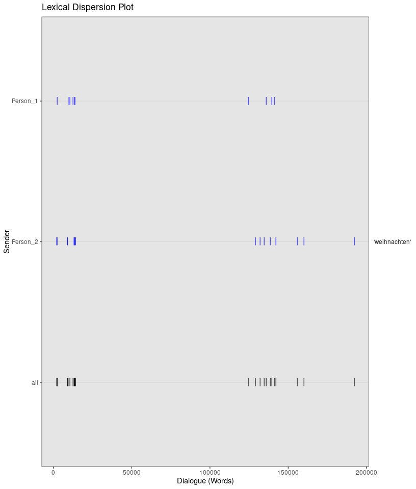
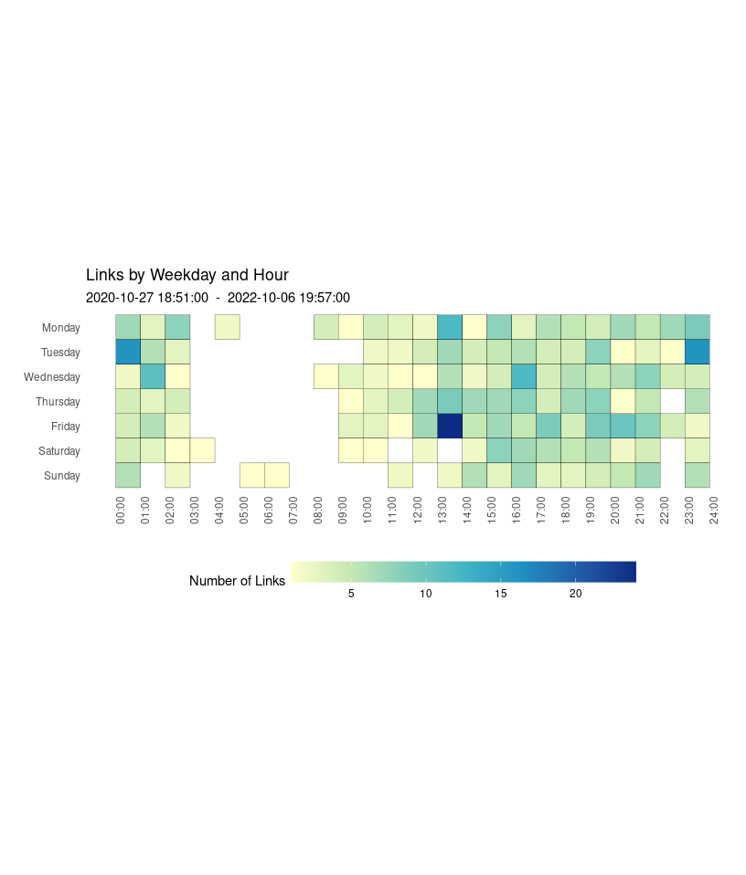
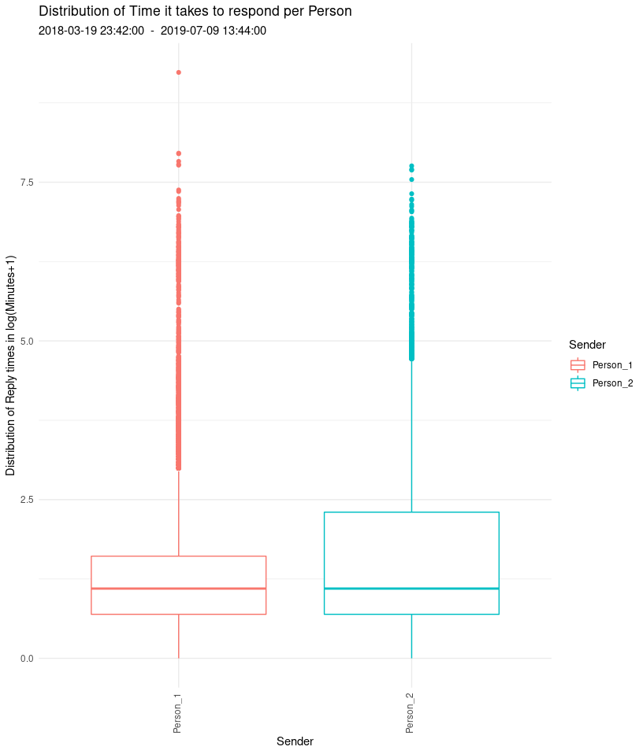
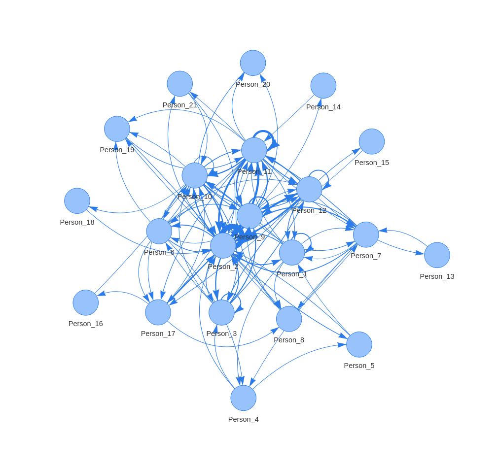

This is an R-package to import exported WhatsApp chatlogs, parse them into a usable dataframe format and thereby enable further analysis. This parser was built with the goal to work with chat logs extracted on Android as well as iOS devices, run on Linux, Mac and Windows, and to be able to handle multiple languages. Currently, only English and German are supported, but in principle, other languages could be added relatively easily (see below). The repo also contains a function to scrape and update the emoji_dictionary, should new emoji be added to WhatsApp in the meantime.
How to set it up?
1) Requirements
- If on Windows,
RToolsneeds to be installed and working - The
RJavapackage needs to be installed and working - plotting emoji requires the
raggpackage and you need to set your graphics backend toAGG(In Rstudio: Tools > Global Options > Graphics > Backend)
2) Installing it
# for the most up-to-date GitHub version
library(devtools)
devtools::install_github("gesiscss/WhatsR")
# from CRAN
install.packages("WhatsR")
3) Testing it
# creating simulated chatlog (saved in working directory)
simulated_raw_chat <- create_chatlog(language = "english")
# parsing it
simulated_parsed_chat <- parse_chat("Simulated_WhatsR_chatlog.txt")
# plotting emojis contained in chat
plot_emoji(simulated_parsed_chat, plot="bar")
4) Using it with your own data
Extract chat from your phone
For Android Phones: https://faq.whatsapp.com/en/android/23756533/?category=5245251
For Iphones: https://faq.whatsapp.com/en/iphone/20888066/?category=5245251#email
# parsing it
simulated_parse_chat <- parse_chat("PATH/TO/YOUR/EXPORTED/FILE.txt")
# plotting it
plot_emoji(simulated_parse_chat, plot="bar")Scientific use
If you are using this package for your research, please cite it accordingly. You get the citation as a BibTex by running
citation("WhatsR")To cite package ‘WhatsR’ in publications use:
Kohne J (2023). “WhatsR - An R-package for parsing, anonymizing and visualizing exported
WhatsApp chat logs.” doi:10.5281/zenodo.7875622, <https://doi.org/10.5281/zenodo.7875622>.
A BibTeX entry for LaTeX users is
@Misc{,
title = {WhatsR - An R-package for parsing, anonymizing and visualizing exported WhatsApp chat logs},
doi = {10.5281/zenodo.7875622},
url = {https://doi.org/10.5281/zenodo.7875622},
year = {2023},
author = {J. Kohne},
}
Does this parser work with other languages too?
Currently, only chats exported from phones set to German or English are supported. Other languages can be added by appending the languages.csv file with the necessary regular expressions to differentiate system messages from user generated content. In addition, parse_chat would need to be adapted and additional tests would have to be added. If you would like to add a language, please consider doing so via a pull request in this repository.
Examples
The package also includes some functions to compute additional metrics and visualize them. We will provide some basic examples for chats with two participants and for group chats with multiple participants here, for a complete overview, you can check the documentation or the figure section. The used chat is a chat that was parsed with the anonimize = TRUE parameter to exclude participant names. All plotting functions include multiple types of plots and additional parameters to restrict the range of the data.
Token Summary per Person
summarize_tokens_per_person(data)$`WhatsApp System Message`
$`WhatsApp System Message`$Timespan
$`WhatsApp System Message`$Timespan$Start
[1] "2020-10-27 18:51:00 UTC"
$`WhatsApp System Message`$Timespan$End
[1] "2022-10-06 19:57:00 UTC"
$`WhatsApp System Message`$TokenStats
Min. 1st Qu. Median Mean 3rd Qu. Max.
1 1 1 1 1 1
$Person_1
$Person_1$Timespan
$Person_1$Timespan$Start
[1] "2020-10-27 18:51:00 UTC"
$Person_1$Timespan$End
[1] "2022-10-06 19:57:00 UTC"
$Person_1$TokenStats
Min. 1st Qu. Median Mean 3rd Qu. Max.
1.000 1.000 6.000 9.195 13.000 169.000
$Person_2
$Person_2$Timespan
$Person_2$Timespan$Start
[1] "2020-10-27 18:51:00 UTC"
$Person_2$Timespan$End
[1] "2022-10-06 19:57:00 UTC"
$Person_2$TokenStats
Min. 1st Qu. Median Mean 3rd Qu. Max.
1.00 1.00 6.00 10.75 14.00 407.00
Message Distribution
Distribution of sent Messages.
plot_messages(data, plot = "cumsum", exclude_sm = TRUE)_cumsum.png)
Token Distribution
Distribution of sent Tokens (words).
plot_tokens(data, plot = "violin", exclude_sm = TRUE)_violin.png)
Tokens over Time
Distribution of sent Tokens per Person over time
plot_tokens_over_time(data, plot = "hours", exclude_sm = TRUE)_hours.png)
Wordcloud
Wordcloud of sent tokens, seperately for each participant.
plot_wordcloud(data, comparison = TRUE, exclude_sm = TRUE, font_size=50, min_occur= 300)_comparison.png)
Lexical Dispersion Plot
Occurrences of keywords in the chat. Example keyword is “Weihnachten” (Christmas).
plot_lexical_dispersion(data,keywords = c("weihnachten"), exclude_sm = TRUE)
Sent Links
Amount of sent Links per person and over time
plot_links(data, plot = "heatmap", exclude_sm = TRUE)
Sent Smilies
Amount of sent Smilies over time
plot_smilies(data, plot = "cumsum", exclude_sm = TRUE)_cumsum.png)
Sent Emoji
Amount of sent emoji per person
plot_emoji(data, plot = "splitbar", min_occur = 50, exclude_sm = TRUE)_splitbar.png)
Location Visualization [Temporarily disabled]
Plotting mentioned locations by persons
Currently disabled until changes in ggmap make it to CRAN
Replytimes
Plotting time it takes to respond
plot_replytimes(data, type = "replytime", exclude_sm = TRUE)
Sent Media
Amount of sent Media files per person and over time
plot_media(data, plot = "bar", exclude_sm = TRUE)_bar.png)
Interactive Networks
Interactive network of chat participants. A connection represents a response to a message. Each Message is interpreted as a response to the previous message. Consecutive messages by the same chat participant are summarized into one “session”. The shown plot is simple image, the actual output is an interactive HTML object, see man folder.
plot_network(data)